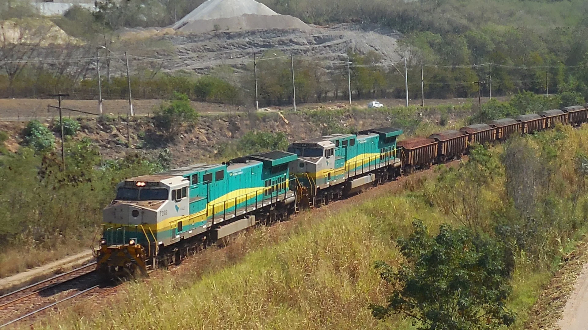
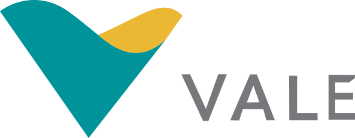
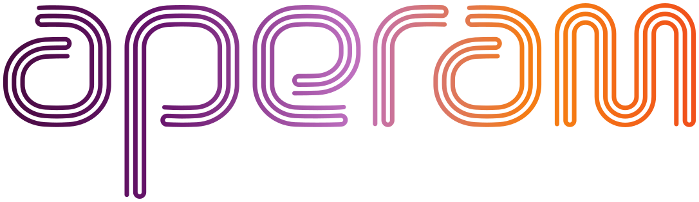
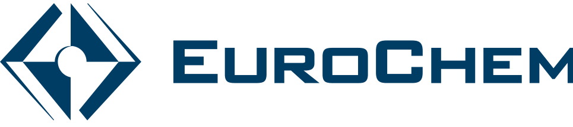
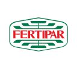
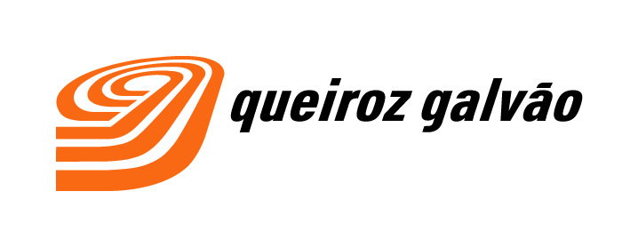

Nitai Morais · 在淡水河谷和 VLI 从事商务、物流与运营工作 16年
散货与工业货物物流，从产地到港口。
我曾在企业内部负责场站、铁路和港口的规划，并在丰田旗下 TSSC 的直接指导下实施丰田生产方式（TPS）。现在，我为运输铁矿石、粮食、化肥和生铁的企业提供路线、成本与风险方面的决策支持，也帮助需要减少损耗的场站、仓库和工厂提升运营。
货种 · 矿石列车
- 产地矿山、农场、钢厂
- 公路半挂车、双挂车、多挂车
- 中转场站转运、仓储、库存
- 铁路车皮、作业窗口、运价
- 港口排队、船舶、装船
这是出口散货最常见的组织方式。也有只走公路、沿海运输或内河运输的供应链，每一种都会改变成本核算。
规模
在真实规模的供应链中积累的经验
5亿雷亚尔我所规划的场站运营的年营业收入
1500万吨在我的规划下出口的粮食
180万吨我负责的客户组合中出口的生铁
16年在淡水河谷集团任职，包括淡水河谷和 VLI
项目负责人
Nitai Morais
我在这条供应链内部工作了16年：在淡水河谷的商务部门，在 VLI 负责场站规划，并带领多达250人的运营团队。我做过产能规划，负责预算申报与答辩，与客户谈判，并在丰田旗下 TSSC 的直接指导下实施丰田生产方式（TPS）。
如今，我把这些经验用于路线、成本与风险的决策，以及需要提升效率的运营。每个项目都由我本人负责，从诊断到交付。
客户
我服务过的客户
在淡水河谷和 VLI 的16年间，涵盖矿石、粮食、化肥和燃料供应链。
矿石与钢铁


粮食
化肥


燃料
建筑

工作方式
工作原则
一切事先书面确认
范围、期限和费用在开始前确定。不收取没有明确交付内容的常年顾问费，也不提供泛泛的报告。
双向保密
基于信任获得的联系人和信息不会转给第三方。我会提议签署保密与不规避协议，保护双方以及引荐人。
先沟通，再报价
关于项目的首次沟通不收费。如有合作，我们共同确定形式；即使不合作，您也能得到一份客观的评估。